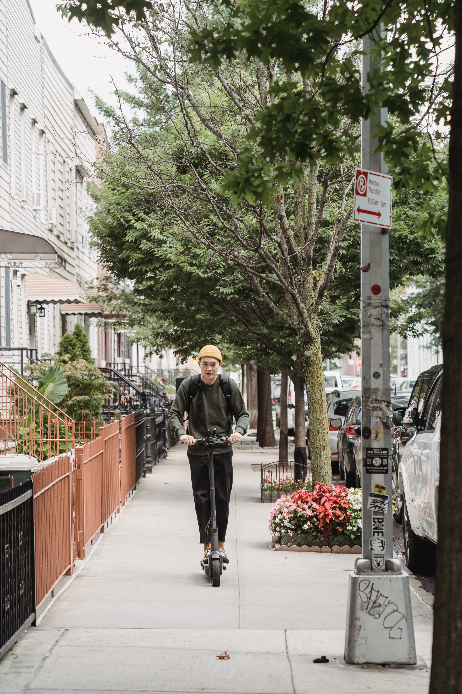
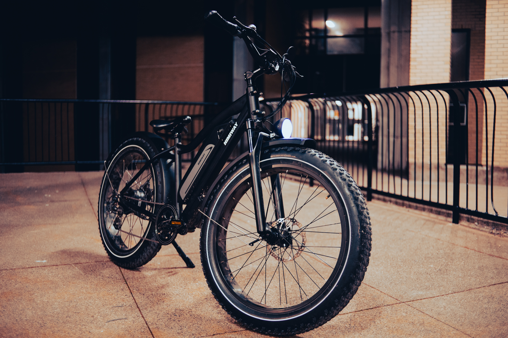

Discover our new electric vehicles
Electric scooters
You might have started seeing more of them on streets and in parks, gliding past you with a faint electric hum. As lockdowns lift and people avoid public transport, e-scooters – stand-up, electrically powered scooters – are becoming more popular.
The easing of lockdowns has highlighted the importance of individual, emission-free, socially distanced transport as governments try to prevent spikes in car use and pollution. But the story of e-scooters is one of both a popular tech gadget and a contentious form of transport. While they offer a seemingly fun and environmentally friendly option for short journeys, a range of questions about their safety and sustainability have emerged in the past two years.
So how did e-scooters go from risky tech novelty to a green travel solution for the coronavirus recovery? And are they really so good for the planet?
E-scooters have been available to privately buy for over a decade but many remain prohibitively expensive. It took the affordable, accessible option of shared, dockless models – which can be rented by the minute using a smartphone app – for their popularity to skyrocket. In 2018, shared e-scooter startups Bird and Lime rapidly introduced them to US cities (sometimes without permission). Soon after, the companies – along with a proliferation of other startups, including European-based Voi and Tier – began to rapidly expand across cities internationally.
Now, e-scooter sharing schemes are available in more than 100 cities, across at least 20 countries, from Chile to South Korea to New Zealand – although Europe and the US continue to dominate in terms of use. Research suggests that by 2024, 4.6 million shared e-scooters will be in operation worldwide, up from 774,000 in 2019.

Battery powered bicycles

Generally speaking, e-bikes are bicycles with a battery-powered “assist” that comes via pedaling and, in some cases, a throttle. When you push the pedals on a pedal-assist e-bike, a small motor engages and gives you a boost, so you can zip up hills and cruise over tough terrain without gassing yourself. Called “pedelecs,” they feel just like conventional bikes—but better, says Ed Benjamin, senior managing director at the consulting firm eCycleElectric. “You control your speed with your feet, like with a regular bike,” he says. “You just feel really powerful and accelerate easily.”
The harder you pedal, the bigger the boost, the faster you’ll ride—to a point. E-bikes let you hum along at a brisk clip, but they aren’t motorcycles. You’ll never hammer down the road at 45 mph. The motor is governed to stop propelling you further when you hit 20 to 28 miles per hour, depending on the bike.
Electric skateboards
Electric skateboards, also known as esk8 or e-skate, have become increasingly popular and are extremely fun to ride.
They are equipped with motors inside the wheels and have a removable battery embedded in the deck.
And apart from electronics, there are also fiberglass and metal parts attached to these fast-moving devices.
High-end electric skateboards feature LED headlights and tail lights.
Decks vary from super stiff to highly flexible platforms. They are made from wood, plastic - or both - and come with grip tape installed.
The most advanced electric skateboard models are sleek, smooth, and aerodynamic.
In flat grounds, a stiffer board will prevail; in bumpier surfaces, flexible decks will help cushion impacts and dampen cracks.
The wireless handheld controller fits in your hand and is easy to use. It will let you change speed settings and braking modes.
The most common types of electric skateboards are longboards.